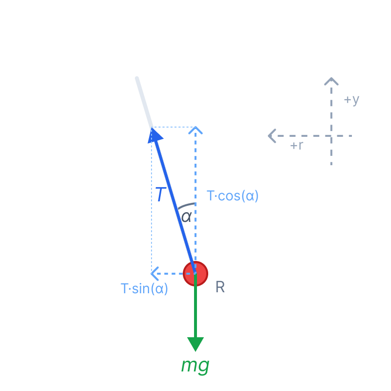

תלמידים יקרים, בשאלה זו אנו פוגשים את המודל הקלאסי של "מטוטלת קונית" בגרסה מעט שונה - משקולת המחוברת לזרוע אופקית באמצעות חבל. הסוד לפתרון בעיות בתנועה מעגלית הוא לזכור תמיד שיש לבחור ציר אחד שמצביע היישר אל מרכז המעגל, שכן שם פועלת התאוצה הרדיאלית שלנו. בואו נפרק את השאלה שלב אחר שלב ביסודיות!
סעיף א'
גוף נקודתי נע במסלול מעגלי אופקי במהירות זוויתית קבועה \( \omega \). גודל מהירותו הקווית קבוע. (כאן אין צורך בהמרת יחידות שכן הנתונים הם פרמטריים).
הסבר מדוע המשקולת מואצת למרות שגודל מהירותה קבוע, וקביעת כיוון התאוצה.
הגדרת התאוצה: חוקי קינמטיקה וקטורית כיוון התאוצה הרדיאלית: \( a_R \) אל מרכז המעגל
ד. הסבר ופתרון:
המושג "מהירות" בפיזיקה הוא וקטור, כלומר יש לו גם גודל וגם כיוון. תאוצה מוגדרת כקצב השינוי של וקטור המהירות בזמן. מכיוון שהמשקולת נעה במסלול מעגלי, כיוון התנועה שלה (הכיוון המשיק למעגל) משתנה בכל רגע. מכיוון שהכיוון משתנה, וקטור המהירות משתנה, ולכן בהכרח קיימת תאוצה.
עם זאת, נתון לנו שגודל המהירות נשאר קבוע. המשמעות הפיזיקלית של גודל מהירות קבוע היא שלתאוצה אין שום רכיב בכיוון המהירות עצמה (הכיוון המשיקי). מכיוון שווקטור המהירות תמיד משיק למסלול, היעדר תאוצה משיקית מחייב שכיוון התאוצה יהיה מאונך למהירות, כלומר בכיוון רדיאלי (לאורך הרדיוס). בתנועה מעגלית קצובה, התאוצה הרדיאלית מכוונת תמיד פנימה, אל עבר מרכז הסיבוב.
המשקולת מואצת משום שכיוון וקטור המהירות שלה משתנה ברציפות לאורך המסלול המעגלי. כיוון התאוצה הוא תמיד רדיאלי, פנימה אל עבר מרכז המעגל האופקי.
סעיף ב'
מן הסעיף הקודם אנו יודעים שלמשקולת יש תאוצה המכוונת אל מרכז המעגל.
קביעה האם שקול הכוחות הפועל על המשקולת שווה לאפס, ואם לא - ציון כיוונו של שקול הכוחות.
החוק השני של ניוטון: \( \Sigma\vec{F} = m\vec{a} \)
ד. הסבר ופתרון:
החוק השני של ניוטון קובע קשר ישיר והדוק בין שקול הכוחות הפועל על גוף לבין תאוצתו. הקשר הוא וקטורי, כלומר גם הגודל וגם הכיוון משחקים תפקיד.
מכיוון שקבענו בסעיף א' שווקטור התאוצה שונה מאפס (\( \vec{a} \neq 0 \)) ומכוון למרכז המעגל, ובהינתן שלמשקולת יש מסה חיובית (\( m > 0 \)), נובע בהכרח ששקול הכוחות שונה מאפס. כיוון שקול הכוחות תמיד, ללא יוצא מן הכלל, זהה לכיוון התאוצה של הגוף.
שקול הכוחות אינו שווה לאפס. לפי החוק השני של ניוטון, כיוונו של שקול הכוחות זהה לכיוון התאוצה, ולכן שקול הכוחות מכוון אופקית פנימה, אל מרכז המסלול המעגלי.
סעיף ג'
תרשים התנועה מראה סיבוב עם כיוון השעון במבט על (החצים על המעגל המרוסק מראים את מגמת התנועה: בחלק האחורי ימינה ובחלק הקדמי שמאלה). המשקולת עוברת בנקודה A הנמצאת בקצה הימני של התרשים, במישור הדף.
את כיוון וקטור המהירות הרגעית של המשקולת בדיוק ברגע המעבר בנקודה A.
כיוון וקטור המהירות: תמיד משיק למסלול התנועה
ד. הסבר ופתרון:
אנו יודעים כי כיוון המהירות הרגעית בכל תנועה לאורך מסלול עקום הוא משיק למסלול. בנקודה A, המסלול הוא המעגל האופקי המרוסק בתרשים.
העמוד האנכי, הזרוע האופקית והמשקולת בנקודה A מצוירים כולם במישור אחד, שהוא מישור הדף. המסלול המעגלי יוצא ממישור הדף (חלק קדמי קרוב אלינו וחלק אחורי רחוק מאיתנו). על פי חיצי הכיוון שעל המעגל המרוסק, התנועה היא עם כיוון השעון במבט מלמעלה: המשקולת נעה ימינה בחלק האחורי, מגיעה לנקודה A, ואז ממשיכה שמאלה בחלק הקדמי.
לכן, ברגע המעבר בנקודה A, המשיק למעגל מאונך למישור הדף ומצביע החוצה, אל עבר הקורא.
כיוון מהירות המשקולת בנקודה A הוא במאונך למישור הדף (השרטוט), מן הדף החוצה ("אלינו").
סעיף ד'
הזווית שהחבל יוצר עם האנך היא \( \alpha \). המהירות הזוויתית היא \( \omega \). תאוצת הנפילה החופשית היא נתון קבוע וידוע שאסמן ב- \( g \) (גודלו חיובי תמיד, \( 10 \text{ m/s}^2 \)). המסה היא \( m \) (נעלמת אך מצופה שתצטמצם).
ביטוי פרמטרי עבור רדיוס המסלול המעגלי \( R \), באמצעות הנתונים \( \alpha \), \( \omega \) ו- \( g \) בלבד.
תאוצה רדיאלית: \( a_R = \omega^2 R \) החוק הראשון והשני של ניוטון: \( \Sigma F_y = 0 \) , \( \Sigma F_x = m a_R \)
תרשים כוחות (FBD):

תרשים כוחות חופשי (FBD) על המשקולת במערכת צירים x-y. שימו לב שהזווית α היא בין החבל לאנך.
ד. הצבה ופתרון:
נגדיר מערכת צירים כפי שמופיע בתרשים: ציר \( y \) אנכי כלפי מעלה (מונח), וציר \( x \) אופקי המכוון היישר למרכז המסלול המעגלי. אנו בוחרים את הציר אל מרכז המעגל חיובי, כיוון שלשם פועלת התאוצה.
הכוחות הפועלים על המשקולת הם כוח הכובד \( mg \) המכוון אנכית מטה, וכוח המתיחות של החבל \( T \), הפועל לאורך החבל.
כעת נפרק את כוח המתיחות \( T \) לרכיבים. מכיוון שהרכיב האנכי צמוד לזווית נשתמש בקוסינוס, והרכיב האופקי נמצא מול הזווית ולכן נשתמש בסינוס:
- רכיב אנכי: \( T_y = T \cdot \cos\alpha \)
- רכיב אופקי: \( T_x = T \cdot \sin\alpha \)
ניישם את חוקי ניוטון על כל ציר בנפרד:
בציר האנכי (y):
המשקולת אינה משנה את גובהה, ולכן אין תאוצה בציר זה. לפי החוק הראשון של ניוטון שקול הכוחות שווה לאפס:
בציר האופקי (x):
בציר זה קיימת תאוצה רדיאלית, ולכן ניישם את החוק השני של ניוטון:
נציב את הנוסחה לתאוצה רדיאלית בדף הנוסחאות המקשרת למהירות זוויתית: \( a_R = \omega^2 \cdot R \):
יש לנו כעת מערכת של שתי משוואות. הדרך האלגנטית ביותר להיפטר מהנעלם \( T \) (שלא נדרש בשאלה) היא לחלק את משוואה (2) במשוואה (1):
כוח המתיחות \( T \) והמסה \( m \) מצטמצמים בשני האגפים. נזכור כי \( \frac{\sin\alpha}{\cos\alpha} = \tan\alpha \):
נבודד את רדיוס המסלול \( R \):
רדיוס המסלול המעגלי נתון על ידי הביטוי:
סעיף ה'
גודל התאוצה (שהיא התאוצה הרדיאלית \( a_R \)) שווה בגודלו לתאוצת הנפילה החופשית \( g \). נסמן: \( a_R = g \).
את גודל הזווית \( \alpha \) שתקיים מצב זה.
משוואות הדינמיקה מהסעיף הקודם
ד. הצבה ופתרון:
במקום להתחיל מההתחלה, נשתמש במשוואות הכוחות שכבר פיתחנו בסעיף ד':
על פי הנתון החדש בסעיף זה, אנו צריכים שהתאוצה הרדיאלית תהיה שווה ל-\( g \). נציב \( a_R = g \) במשוואה (2):
כעת נסתכל על שתי המשוואות (1) ו- (\( 2^* \)). שוב, נחלק את המשוואה האופקית באנכית כדי לצמצם את הכוחות הפנימיים והמסה:
לאחר צמצום של \( T \) בצד שמאל ושל המונח כולו \( mg \) בצד ימין (שנותן כמובן 1, ולא אפס!), נקבל:
הזווית שהטנגנס שלה הוא 1 היא:
כדי שתאוצת המשקולת תהיה שווה לתאוצת הכובד \( g \), גודל הזווית \( \alpha \) צריך להיות \( 45^\circ \).